emoji
Reach
Explorar
New ideas, useful questions and discovery.
:capptus-reach:CAPPTUS DESIGN · THE LIVING OASIS
The world we’re building for Capptus, brought together. From the original mark to small gestures and the way we tell a story.
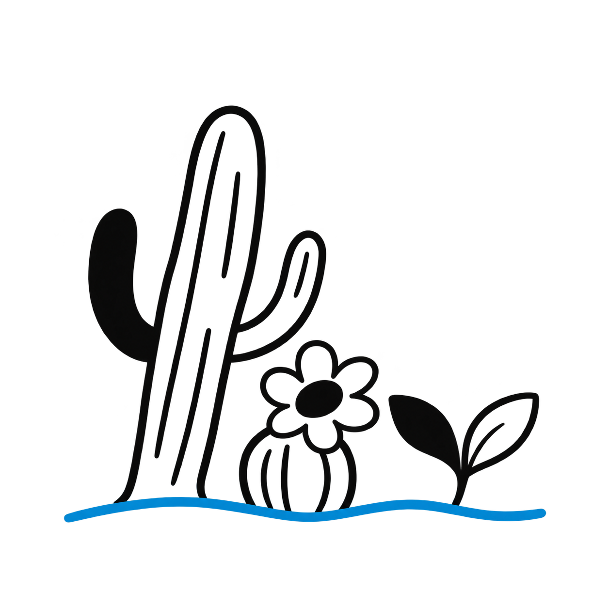
ROOTED IN BAJA. OPEN TO POSSIBILITY.
01 / THE WORLD AROUND THE MARK
The original Capptus logo stays at the center. Editorial typography, warm surfaces, Baja-inspired imagery, and confident linework build the world around it.

#008ED1Identity accent
#6D6E70Identity color
#F8F7F3Warm surface
#D8C5ABSupporting surface
#3B5146Deep support
#1B1B19Reading text
EDITORIAL DISPLAY
Rooted in identity.
Open to possibility.
SIMPLE READING TYPE
Space for one dominant message, with straightforward reading text and quiet structure underneath.
Current studies use Georgia / Times and Arial / Helvetica fallbacks. Supporting colors and final font choices remain design proposals.
02 / THE ASSET LIBRARY
Eight original illustrations, eight compact emoji designs, and sixteen interface icons. Browse the actual artwork and download the files you need.
32 assets
Explorar
New ideas, useful questions and discovery.
:capptus-reach:Florecer
Launches, appreciation or confirmed milestones.
:capptus-bloom:Sostener
Support, continuity and ongoing care.
:capptus-rooted: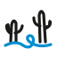
Conectar
Integration, collaboration and coordination.
:capptus-connect: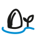
Encontrar camino
Problem-solving, alternatives and adaptation.
:capptus-adapt:Crecer juntos
Teamwork, partnership, welcome and collaboration.
:capptus-together: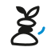
Cuidar
Operations, review, quality and appreciation.
:capptus-balance:Avanzar
Roadmaps, completed phases and new beginnings.
:capptus-horizon: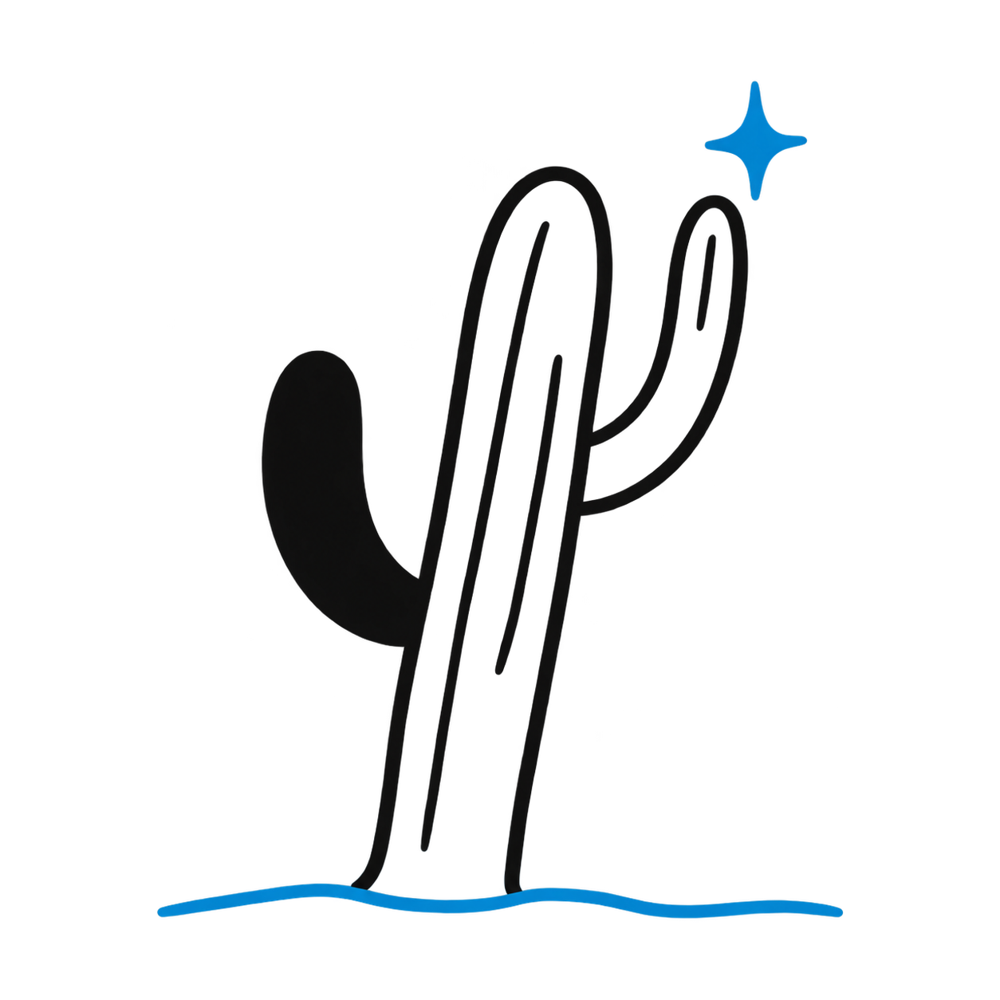
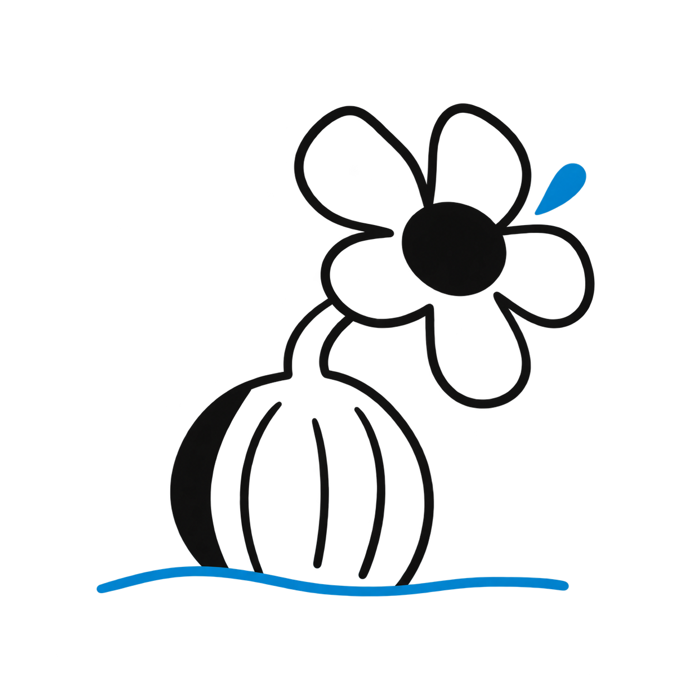
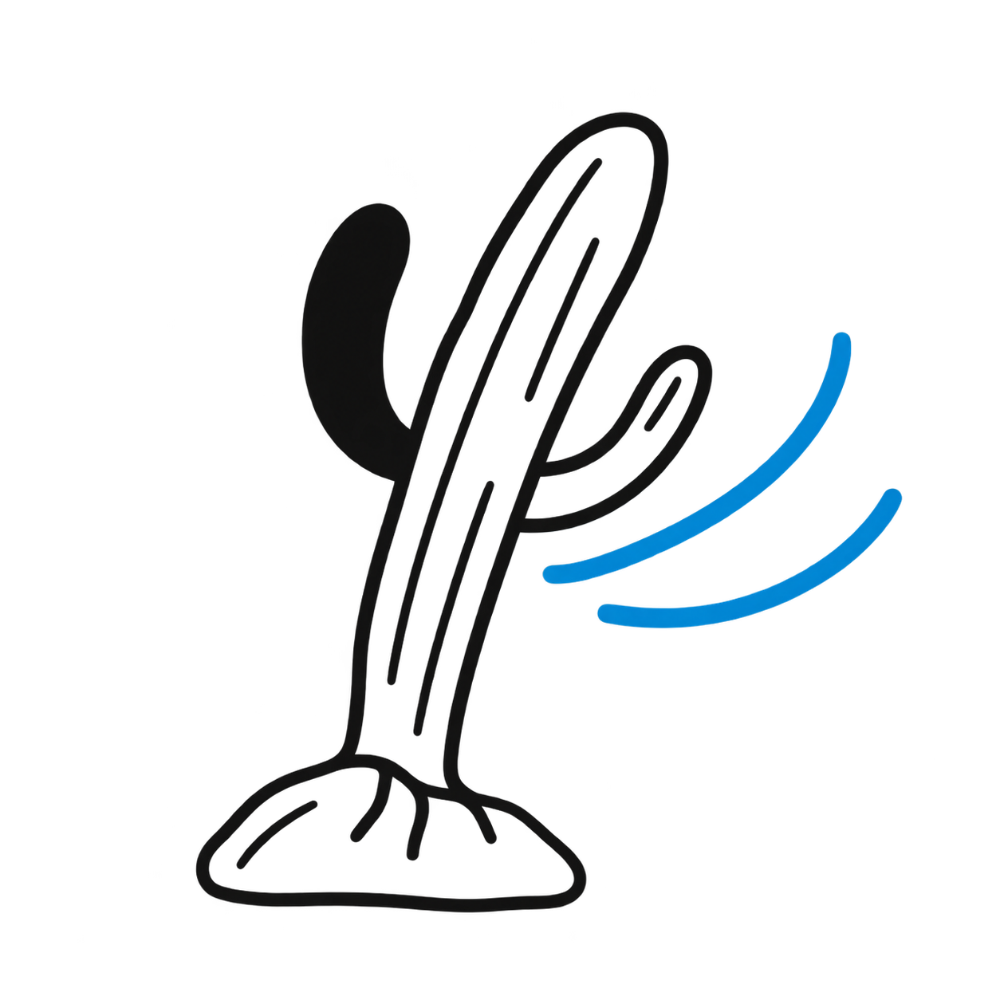
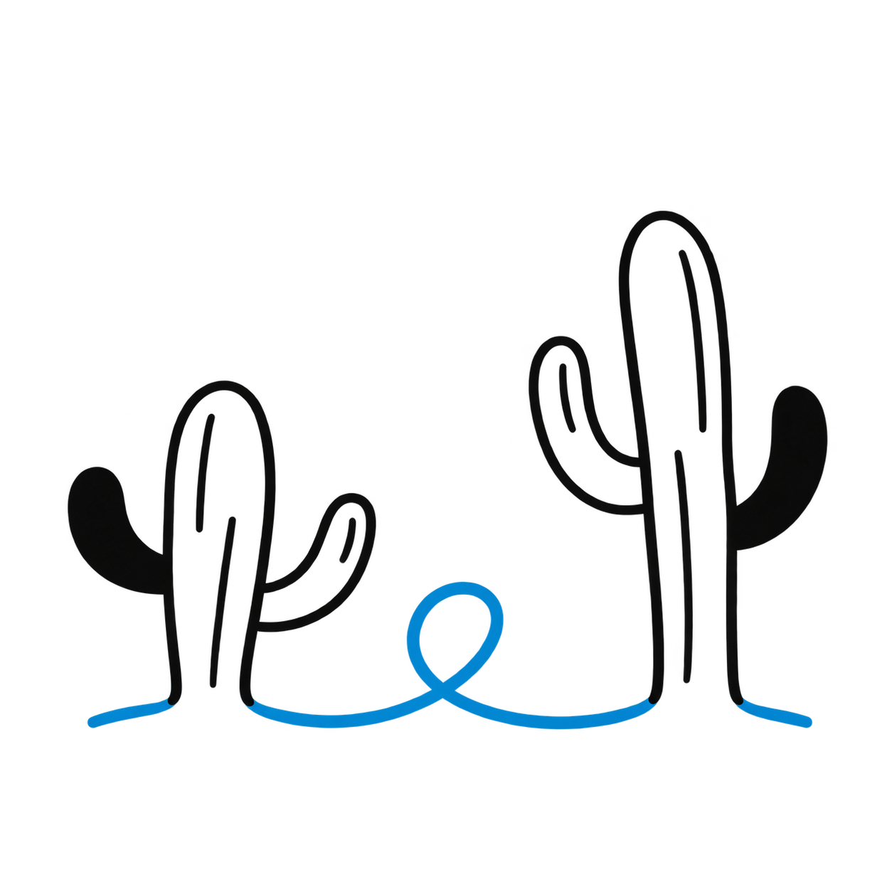
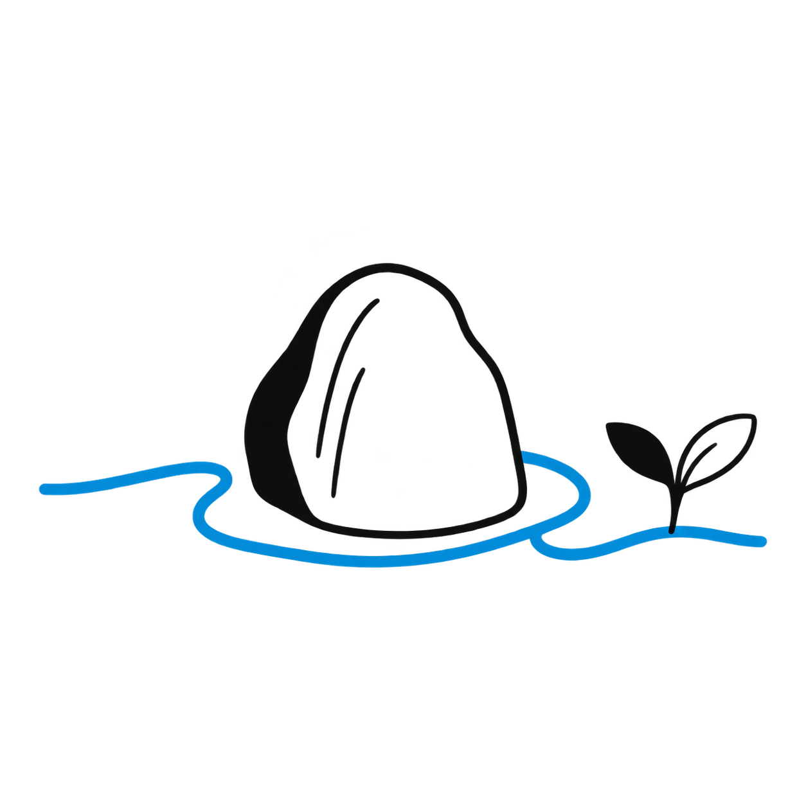
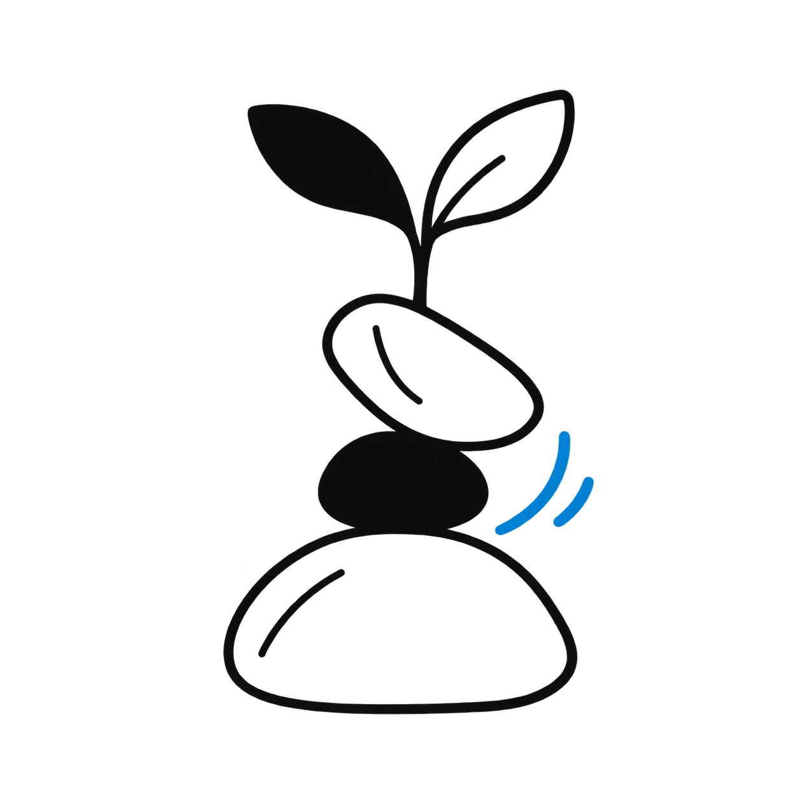
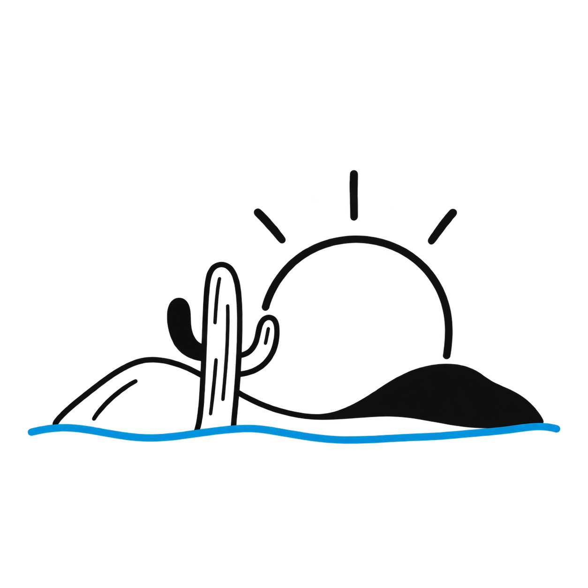
No matching assets. Try another name or family.
An illustration carries the story. Keep original art at a generous size.
An emoji adds expression. Use compact artwork from 32px; keep light tiles on dark chat surfaces.
An icon guides an action. Use 20–32px symbols within a labeled control.
Shortcodes are proposed custom emoji names. Uploading to GitHub does not install them into messaging platforms. Read usage notes ↗
03 / THE SYSTEM IN USE
Selected layouts from the Revenue OS workshop show the same palette, typography, and illustration family working across a presentation.


Design excerpts from the supplied 17-page Workshop Cut. Client-specific working pages are kept outside this showcase.
04 / DIGITAL FOUNDATIONS
A small CSS foundation for bringing the same language into digital experiences. Action blue is darker than identity blue for readable text and controls.
A CLEAR NEXT STEP
Quiet structure, one idea, and a clear reading order.
Keep the logo intact. Use actual product needs to add components. Record decisions and check accessibility as the system grows.
05 / TAKE IT INTO YOUR WORK
Original artwork, editable SVGs, PNG exports, tokens, and usage guidance. Everything in one shared place.